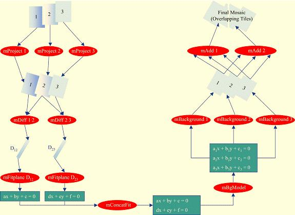
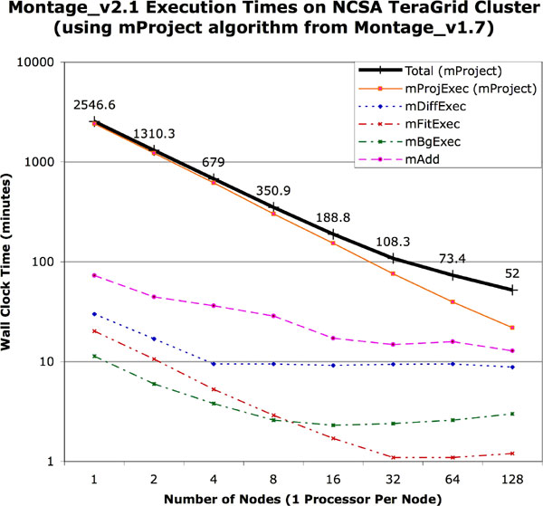
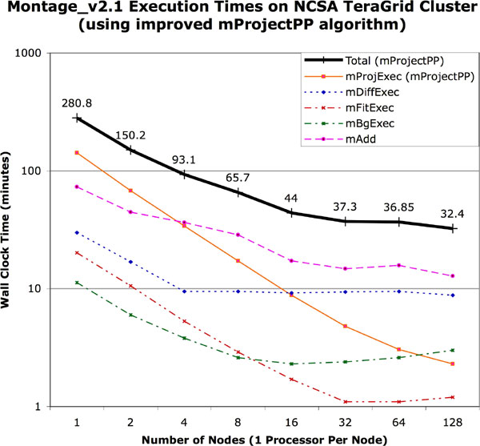
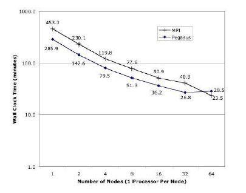
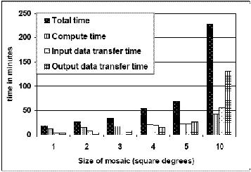
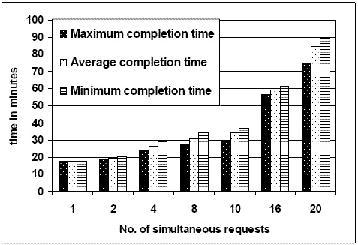

The generality inherent in the general re-projection algorithm comes at the expense of speed. For example, serial re-projection of 54 2MASS images, covering 1 square degree of sky, on a 2.3 GHz Linux processor with 1 GB memory takes 5500 seconds. Since background rectification and co-addition together take less than 100 seconds, a mosaic can be built in a total of 5600 seconds.
Montage provides two ways to speed-up the re-projection. The first is to use the fast re-projection algorithm, mProjectPP, whenever feasible. The second way is to exploit the parallelization inherent in the design of Montage. Figure 1 presents a workflow for generating a mosaic of three images denoted '1', '2' and '3'. The only step in the workflow that cannot be parallelized is the computation of the background model: the module mBgModel only runs after the image re-projections, image differencing and plane fitting have completed.
Montage is highly scaleable, and the parallelization illustrated in Figure 1 can be extended to any number of files. Montage uses the same set of modules to support two instances of parallelization:
What follows summarizes the performance of Montage, intended as a guide for parties intending to incorporate Montage into a cluster or grid environment. The figures report the performance of the general and fast re-projection algorithms, the relative performance of MPI and Pegasus, and the scalability of Montage with the image size and number of jobs. Unless stated, the performance figures include the effects of scheduling jobs and staging data as well as the computing time needed to re-project images, rectify backgrounds and co-add the processed images. More thorough discussions of the performance of Montage are given in Katz et al. (2005) and Deelman et al. (2005). While derived for version2.1, the same performance figures are also applicable to version 3.x.
Figure 1: A Directed Acyclical Graph (DAG) showing the parallelization in the Montage design.
Performance Benchmarks. The performance of Montage was measured by benchmark computations that generate mosaics of 2MASS data centered on M16 or M17. The processing was performed on the "Phase 2" cluster of the Distributed Terascale Facility (hereafter, TeraGrid) at the National Center for Supercomputing Applications (NCSA). The processing runs used 631 nodes with dual Itanium 2 1.5 GHz processors with at least 4 GB of memory. The network between nodes was Myrinet and the operating system was SuSE Linux. Disk I/O was to a 24 TB General Parallel File System (GPFS). Jobs were scheduled on the system using the Portable Batch System (PBS). The queue wait time was not included in the execution times, since that is heavily dependent on machine load from other users.
Performance of the General and Fast Re-projection Algorithms. Figures 2 and 3 show the performance of the general algorithm (mProject) and the fast algorithm (mProjectPP) in returning a mosaic of 1,254 input 2MASS images, each about 0.5 megapixels in size and overlapping at the edges, for a total of 657 megapixels (about 5 GB with 64 bits/pixel double precision floating point data). The output is a 3.7 GB FITS file, with a 21,600 x 21,600 pixel data segment, and 64 bits/pixel double precision floating-point data. The figures clearly show that mProjectPP is between 20 and 30 times faster than mProject. This performance improvement does not, however, carry over to the total times to generate the mosaics because the co-addition and background rectification modules do not scale with the number of nodes.
Figure 2: Plot of wall clock time versus number of nodes on the NCSA TeraGrid cluster for the parallel components of version 2.1 of Montage with the general mProject algorithm. The total time for the end-to-end run is shown as the thick black line.
Figure 3: Plot of wall clock time versus number of nodes on the NCSA TeraGrid cluster for the parallel components of version 2.1 of Montage with the fast algorithm, mProjectPP. The total time for the end-to-end run is shown as the thick black line.
Performance of Pegasus and MPI. Figure 4 shows the relative performance of MPI and Pegasus for the mosaic described in the previous section (Figures 2 and 3). MPI shows slightly better performance, but the difference between the two becomes less pronounced as the number of nodes increases.
Figure 4: Comparison of the performance of Montage under MPI and Pegasus for building a 6° by 6° mosaic of 2MASS data.
Scaleability with Mosaic Size. Figure 5 shows how the total execution time scales as the mosaic size increases. It reports the total execution time of the workflow (total time) including the time taken to transfer the input image files from the Information Sciences Institute (ISI) to the storage system at NCSA (input data transfer time), the time taken to execute the workflow (compute time), and the time taken to transfer the created mosaic from NCSA to ISI (output data transfer time). The increase in the total time taken to create the workflow scaled linearly with the area of the mosaic. But, as the mosaic size increases, the time to transfer the input and output data begins to dominate the compute time of the workflow. In particular, the time taken to transfer the output data contributes significantly to the increase in the total time.
Figure 5: Total execution time as a function of mosaic size
System Throughput. The system throughput was measured by submitting a sets of 1, 2, 4, 8, 10, 16, and 20 simultaneous requests to a Condor pool of 50 nodes. Each request was to process a one square degree mosaic 2MASS J-band mosaic centered on M17. Figure 6 shows the maximum, average and the minimum completion time of requests in each set. The average completion time increases from 18 minutes to 85 minutes as the number of simultaneous requests increase from 1 to 20. The maximum variation between the earliest completing request and the last completing request is 14 minutes in case of 20 simultaneous requests. The resulting throughput of the cluster is one square degree mosaic per 4.5 minutes.
Figure 6:
